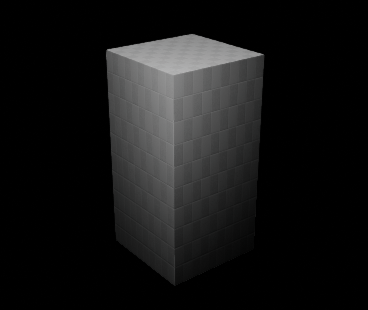
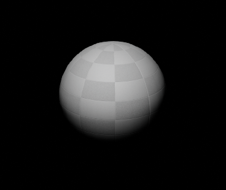

First mod · Первый мод
Turn a cube into a sphere
- Open Tools → Atlas: Mod Wizard. Choose World objects & vehicles → World actor and test placement.
Choose a unique Content Id (e.g.
yourname.firstsphere) and Mod Folder Name (e.g.FirstSphere). Click Create Mod. - Click Open Generated Assets. In your mod’s
EntityExamplefolder openBP_ExampleWorldActor. Select ExampleBody in Components. In Details → Static Mesh replace Cube with Sphere from/Engine/BasicShapes. Enable Show Engine Content in the picker if needed. Set Scale X, Y and Z to 1. Click Compile and Save. Check the Blueprint viewport for the round shape. - Open
FloorExample/L_ExampleFloor. Select its layout actor and inspect ExamplePlacement → Default Actor Class. It points to your Blueprint. The floor creates this placement during gameplay. - Fill in the mod card and version. Open Release → Cook & Publish..., select the matching installed KLETKA executable under Packaged Game, then choose Cook Mod → Build Status → Install Test Copy → Launch Game. Enable the mod, include it in the session and visit its example floor. Look for the sphere at the layout anchor.
- For a first upload, choose a store, leave the item ID empty and choose Publish Privately.... Open the returned page. For your next release save a new version, cook again, enter and confirm that store’s item ID and choose Update Existing Release....


Первый мод — заменяем куб на сферу
- Открой Tools → Atlas: Mod Wizard. Выбери World objects & vehicles → World actor and test placement.
Введи свой Content Id (например,
yourname.firstsphere) и имя папки (например,FirstSphere). Нажми Create Mod. - Нажми Open Generated Assets. В папке мода
EntityExampleоткройBP_ExampleWorldActor. В Components выбери ExampleBody. В Details → Static Mesh выбери Sphere из/Engine/BasicShapes. Если меши движка скрыты, включи Show Engine Content в настройках списка ассетов. Поставь Scale по трём осям в 1, нажми Compile и Save. В окне Blueprint увидишь сферу. - Открой
FloorExample/L_ExampleFloor. У актора разметки этажа выбери ExamplePlacement. В Default Actor Class уже задан изменённый Blueprint. Этаж создаёт этот объект во время игры. - Заполни карточку мода и версию. На вкладке Release нажми Cook & Publish.... В Packaged Game укажи установленную KLETKA подходящей версии, нажми Cook Mod и проверь Build Status. После успешного cook нажми Install Test Copy → Launch Game. Включи мод в игре и при создании сессии. На тестовом этаже проверь сферу у точки размещения.
- Для первой загрузки выбери площадку, оставь ID пустым и нажми Publish Privately.... Открой страницу из результата. При обновлении сохрани новую версию, повтори cook, введи и подтверди ID этой страницы и выбери Update Existing Release.... Видимость страницы сохранится.
Make a guard hit harder
Create an Enemy template. Open EntityExample/NPC/GA_ExampleGuardAttack → Apply Combat Damage. Change Damage from 10 to 15, compile and save. In NPC_ExampleGuard, Attacks owns range and cooldown. In the authoring panel select the mod and a multiplayer gameplay map, then click Test Enemy on Client. Inspect the server hit and the health received by the player. Resistances can change the final amount.
Detachable limbs
Right-click in the Content Browser, choose Atlas → Create Limb Profile, and select the skeletal mesh in the dialog. Save it inside your mod. For a custom skeleton select the joints, then click Generate Fragments. Use Preview Generated Fragment to inspect a part. Add Atlas Limb Damage to the enemy Blueprint and assign the profile. Damage To Detach is the accumulated health loss for one limb.
Replay a floor
Create a Floor template, open FloorExample/DA_Floor, choose a seed and run its floor preview. Save the result before changing the layout. Repeat with the same seed and compare placement identities after reload.
Изменить урон охранника
Создай мод из шаблона Enemy. В EntityExample/NPC/GA_ExampleGuardAttack → Apply Combat Damage замени Damage с 10 на 15, скомпилируй и сохрани. Дальность и задержка между атаками задаются в NPC_ExampleGuard → Attacks. В панели авторинга выбери мод и игровую карту с мультиплеером, нажми Test Enemy on Client. Сверь попадание на сервере с потерей здоровья клиента. Сопротивление цели может изменить результат.
Отделяемые конечности
Нажми ПКМ в Content Browser, выбери Atlas → Create Limb Profile и укажи Skeletal Mesh в окне. Сохрани профиль в своём моде. Для своего скелета выбери суставы и нажми Generate Fragments. Кнопка Preview Generated Fragment откроет выбранную часть. Добавь в Blueprint врага компонент Atlas Limb Damage и назначь ему профиль. Damage To Detach задаёт, сколько здоровья враг должен потерять от попаданий в одну конечность для её отделения.
Повторить этаж
Создай мод этажа и открой FloorExample/DA_Floor. Задай seed, запусти предпросмотр и сохрани результат. После правки запусти тот же seed и сравни идентификаторы размещённых объектов после загрузки.